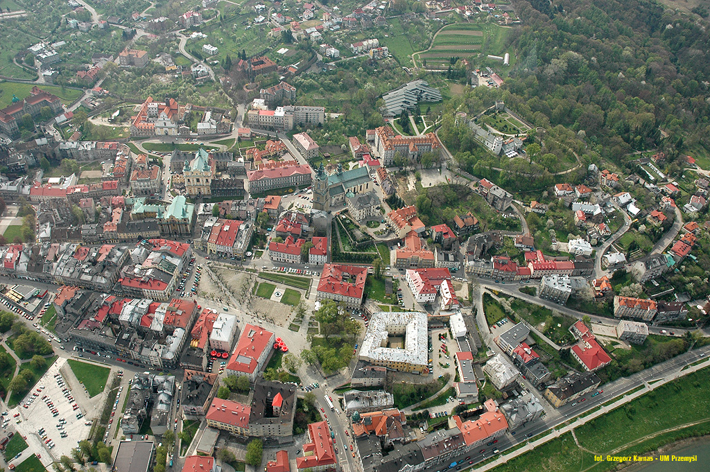

PRZEMYŚL
Miasto z tysiącletnią historią

Widok na miasto
Kalendarium historii Przemyśla
- VIII wiek – Na terenie osiedlają się Lędzianie a ich książę Przemysł-Lestek I, (oba imiona oznaczają tę samą cechę charakteru: przebiegłość, spryt) zakłada miasto i od swego imienia nazywa Przemyślem.
- IX wiek – Przemyśl zostaje włączony do Państwa wielkomorawskiego. Powołanie łacińskiego biskupa misyjnego.
- 899 - Przemyśl opanowują Węgrzy.
- 940-te - Początek trybutarnej zależności od Rusi Kijowskiej.
- 981-985 – Włodzimierz Wielki toczy walki o gród i zdobywa go.
- 1018 – Bolesław Chrobry ponownie przyłącza Przemyśl do Polski.
- 1031 – Przemyśl zostaje ponownie zagarnięty przez Ruś Kijowską. Początek osadnictwa żydowskiego w Przemyślu (pierwsze udokumentowane osadnictwo Żydów na ziemiach polskich).
- 1069 – Po zajęciu grodu przez Bolesława Śmiałego staje się on siedzibą monarchy na kilka lat.
- 1086-1344 – Miasto pod panowaniem księstwa halicko-włodzimierskiego, przez krótki okres stolica.
- 1344 – Król Kazimierz III Wielki przyłącza Przemyśl z tzw. Rusią Czerwoną do Polski po śmierci ostatniego władcy ruskiego, Bolesława Jerzego, który zapisał ją w swym testamencie polskiemu władcy.
- 1389 – Miasto otrzymuje nową lokację na prawie niemieckim. Wybudowany zostaje murowany zamek, miasto otoczone wysokim murem z wieżami, powstają nowe kościoły, klasztory, ratusz.
- 25 listopada 1461 – powstanie pierwszego szpitala miejskiego, który został ufundowany przez Andrzeja z Pomorzan właściciela Maćkowic.
- 1498 – Najazd wojewody wołoskiego Stefana Wielkiego, który zdobył miasto i wydał je na łup żołnierzom. Po złupieniu miasta spalono je doszczętnie nie oszczędzając nawet świątyń.
- 1614 – Miasto zostało zniszczone przez Kantymira Murzę.
- 1648 – Obległ je pułkownik kozacki Kopystyński, lecz został pobity przez Karola Korniakta z Sośnicy.
- 1656 – Oblegał Przemyśl generał szwedzki Robert Douglas, który ustąpił przed nadciągającymi wojskami hetmana Stefana Czarnieckiego - punkt zwrotny w potopie szwedzkim, od tego wydarzenia liczy się odwrót wojsk szwedzkich z Rzeczypospolitej.
- 1657 – Miasto odpiera najazd wojsk siedmiogrodzkich Jerzego Rakoczego, według legendy wystawiając relikwie jednego z lokalnych świętych w procesji, która wyszła naprzeciw najeźdźcom.
- 1667 - została uruchomiona poczta publiczna ze stałym połączeniem z Krakowem, Lwowem i Lublinem.
- 1670 - Miasto fortyfikował Andrzej Maksymilian Fredro h. Bończa (ok. 1620-1679)
- 1672 – Okolice Przemyśla spustoszyli Tatarzy, których pod Kormanicami pobili mieszczanie przemyscy pod wodzą gwardiana reformatów o. Krystyna Szykowskiego.
- 1692 - powstanie greckokatolickiej eparchii przemyskiej.
- 1754 - Adam Klein założył pierwszą drukarnię w Przemyślu.
- 1756–1764 - Stanisław August Poniatowski pełnił funkcję starosty przemyskiego.
- 1772 – Miasto w wyniku I rozbioru trafia w posiadanie Austrii – następuje proces upadku miasta i stagnacji trwającej do czasu autonomii Galicji i budowy Twierdzy Przemyśl.
- 1778-1787 - miasto było prywatną własnością hrabiego Ignacego Cetnera.
- 1855 - założenie cmentarza głównego.
- 1869 - powstało Towarzystwo Dramatyczne „Fredreum”.
- 5 września 1880 - Franciszek Józef I przybywa do Przemyśla.
- 1883 - odsłonięcie pomnika Jana III Sobieskiego.
- 1887 - oddanie do użytku kompleksu Szpitala Wojskowego.
- 31 marca 1890 - utworzono Towarzystwo dla Upiększania Miasta.
- 1908Czech Wincenty Swoboda zakłada pierwszą wytwórnię fajek.
- 1909 - utworzenie Towarzystwa Przyjaciół Nauk.
- 1910 - powstanie Muzeum Narodowego Ziemi Przemyskiej.
- 1914-1918 – Ciężkie walki o miasto w związku z ufortyfikowaniem go przez twierdzę (Twierdza Przemyśl).
- 17 września - 10 października 1914 - I oblężenie Twierdzy Przemyśl.
- 5 listopada 1914 – 20 marca 1915 - II oblężenie Twierdzy Przemyśl
- 22 marca 1915 - kapitulacja Twierdzy Przemyśl.
- 26 kwietnia 1915 - przybycie cara Mikołaja II.
- 3 czerwca 1915 - wkroczenie wojsk niemieckich oraz austriackich.
- czerwiec 1915strong- wizyta arcyksięcia Fryderyka Marii Habsburga.
- 1918 - powstał Garnizon Przemyśla.
- 1918-1919 – Walki polsko-ukraińskie o miasto (udział Orląt Przemyskich – polskiej młodzieży szkolnej).
- 1918-1939 – Siedziba powiatu w województwie lwowskim.
- 1931 – Według spisu powszechnego miasto zamieszkują 62 272 osoby, z czego 39 430 (63,3%) to rzymscy katolicy, 18 376 (29,5%) – Żydzi, 4391 (7%) – grekokatolicy a 85 (0,2%) – przedstawiciele innych orientacji światopoglądowych. Przemyśl jest jednym z największych ośrodków miejskich między Krakowem a Lwowem.
- 1939-1941 – Miasto podzielone wzdłuż Sanu – Zasanie pod okupacją niemiecką, zaś Stare Miasto – pod radziecką.
- 1939 – 16-19 września Niemcy rozstrzelali ok. 600 Żydów.
- 1940 - ukraińscy nacjonaliści za aprobatą hitlerowców demontują Pomnik Orląt Przemyskich (odbudowany później nie na Placu Konstytucji, gdzie znajdował się w okresie międzywojennym, lecz nad Sanem). Utworzono getto żydowskie.
- 1941-1944 - wymordowanie prawie całej ludności żydowskiej
- 1944 – Armia Czerwona wkracza do miasta przy pomocy Pułków piechoty Armii Krajowej 38 i 39 z Podokręgu Rzeszów ; Istniały plany ulokowania tu siedziby województwa, ale ostatecznie zwyciężyła koncepcja położonego bardziej centralnie, choć znacznie mniejszego Rzeszowa.
- 1944-1947 – W okolicach trwają walki z partyzantką UPA, dochodzi do mordów na polskiej ludności cywilnej.
- 1945-1975 – Siedziba powiatu w województwie rzeszowskim.
- 1975-1998 – Stolica województwa przemyskiego.
- 1989 - w październiku obchodzono 600-lecie odnowienia praw miejskich.
- 1991 – Odwiedziny Jana Pawła II, papież przekazał wiernym obrządku wschodniego na katedrę ich obrządku dawny kościół jezuitów.
- od 1 stycznia 1999 – Miasto powiatowe (powiat przemyski) w województwie podkarpackim ze stolicą w Rzeszowie.
- 2002 - powstało Muzeum Twierdzy Przemyśl.
- 2006 - odsłonięcie tablicy Zaułka Wojaka Szwejka. 10.09.2006 – odsłonięcie tablicy upamiętniającej pobyt gen. W. Andersa.
- 2007 - odsłonięcie Pomnika Papieża Jana Pawła II.
- 2008 - odsłonięcie pomnika Ławeczka Józefa Szwejka w Przemyślu. Utworzono Związek Gmin Fortecznych Twierdzy Przemyśl.
- 2009 - odsłonięcie Pomnika w hołdzie żołnierzom Armii Krajowej.
- 2012 - oddano do użytku most Bramę Przemyską.
- 2015 - otwarto Podziemną Trasę turystyczną.
- 2016 - odsłonięcie Pomnika Zesłańców Sybiru i Ofiar Katynia.